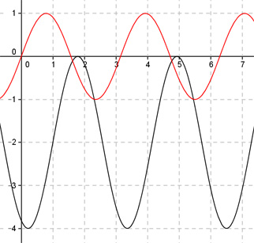

Aufgabe 253 Bestimmen Sie a und c für den dargestellten Graphen der Form y = a * sin (b * (x + c)) + d.  Abgelesen an y = -2 (von 1 bis 4,14) Periode = п 2п |b| = ---- = 2 п Keine Spiegelung an y = -2 --> b = 2 asin2(x + c) + d Verschiebung von Punkt (0|0) in (1|-2) --> Abgelesen: Verschiebung entlang der y-Achse um -2 --> d = -2 --> y = asin (2(x + c)) - 2 Abgelesen: Verschiebung entlang y = -2 um 1 nach rechts --> c = -1 --> y = asin (2(x - 1)) - 2 Abgelesen: |a| = 2 Keine Spiegelung an y = -2 --> a = 2 y = 2sin(2(x - 1)) - 2 Zum Vergleich: sin(2x)